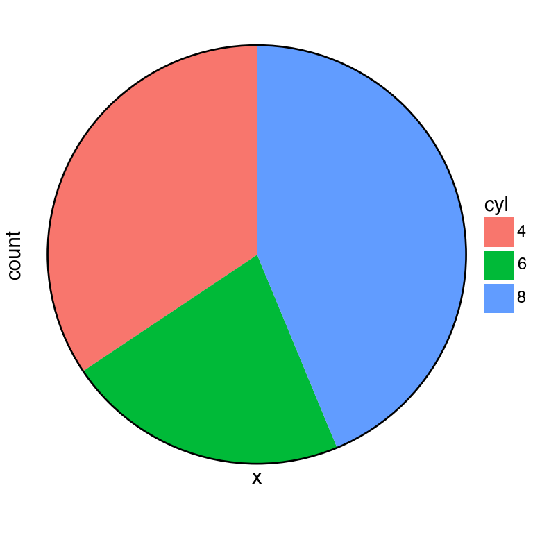
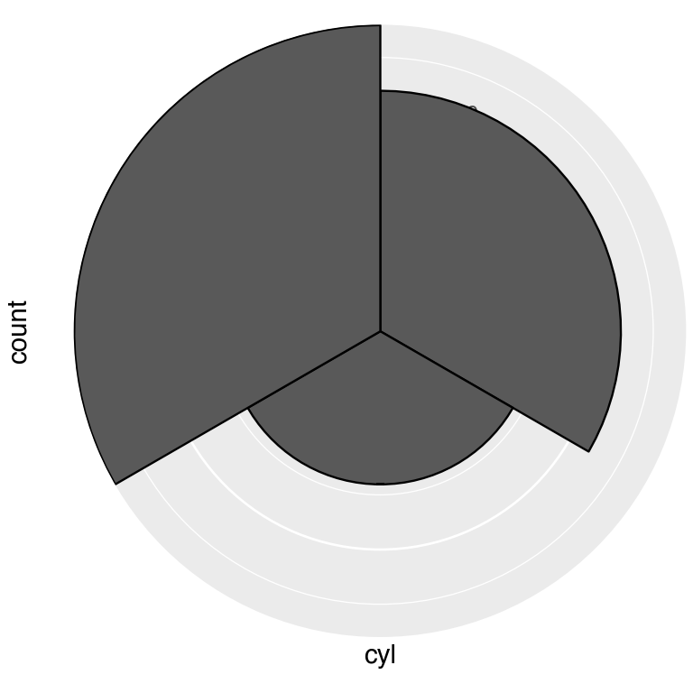
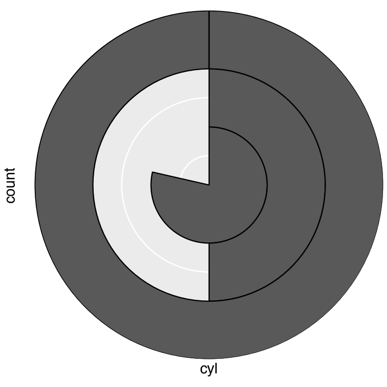
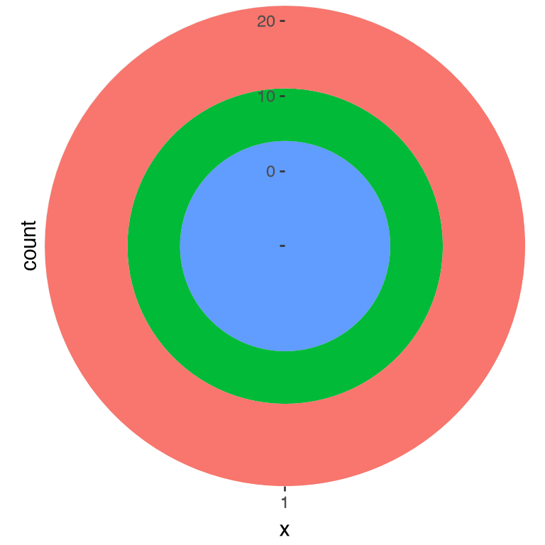
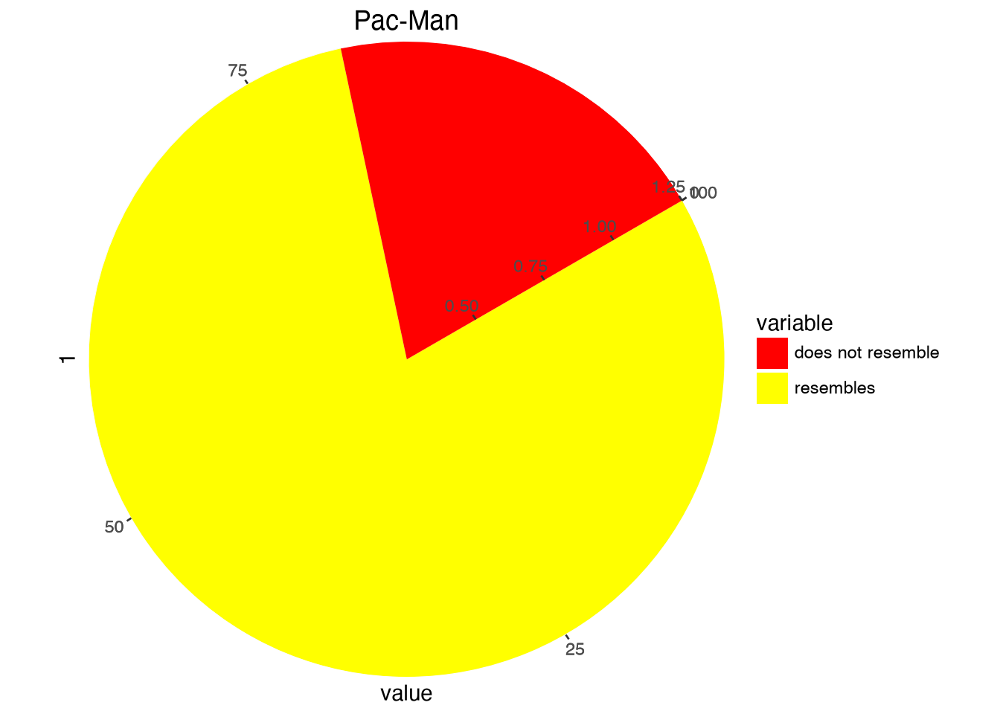
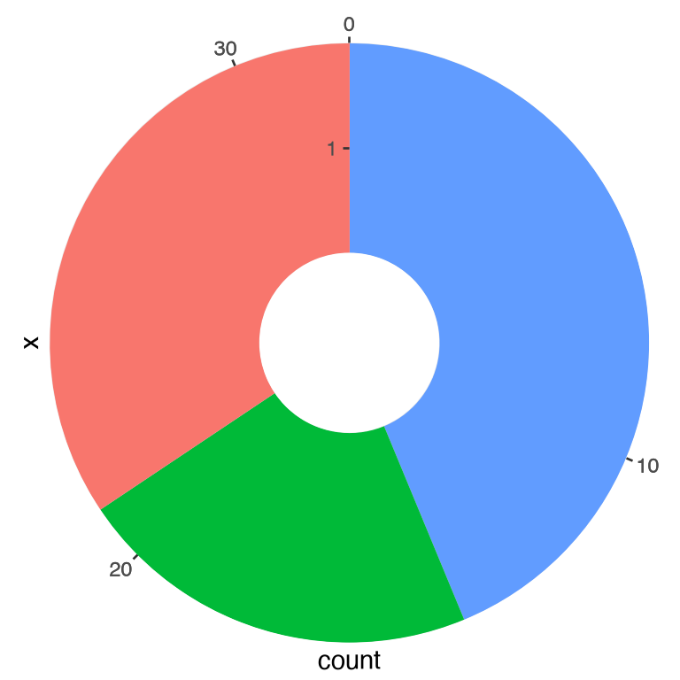
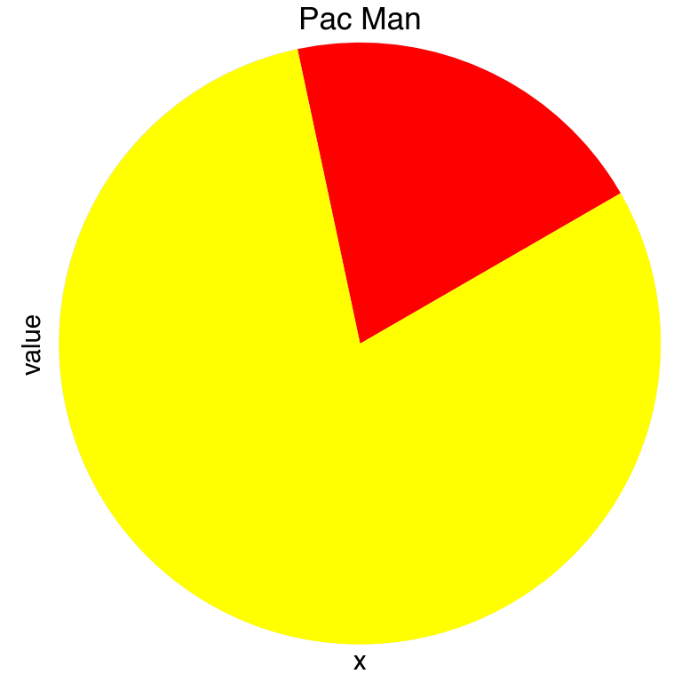
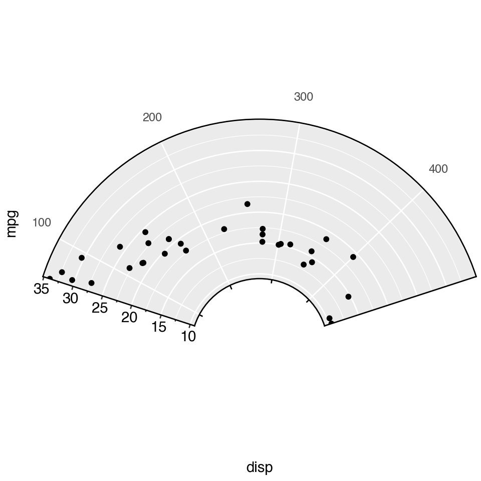
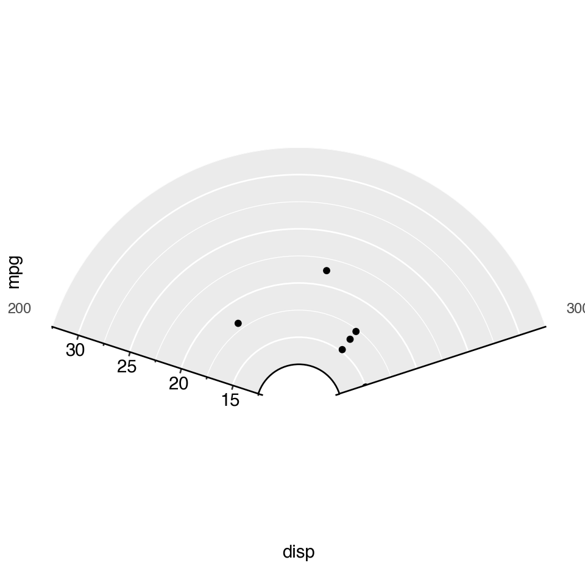

import numpy as np
import polars as pl
import plotnine_polars as p9
from plotnine.data import mtcars
from plotnine_polars import aes3 Examples from coord_radial() documentation
Version 3.5.0s of ggplot2 introducted coord_radial(), a modernized polar coordinate system adds three key capabilities over coord_polar():
- Partial arcs via an
endargument (any arc from a sliver to a full circle). - Inner radius (
inner_radius) to create donut and gauge charts. - Radial-axis placement (
r_axis_inside) and optional angle-aesthetic rotation (rotate_angle).
The examples below are adapted from the ggplot2 reference page.
Caution
All of the examples on this page require the coord-polar branch of iangow/plotnine. The standard version of plotnine does not include the coord_polar() and coord_radial() functions used here.
Note
In this chapter, I use plotnine_polars, a package with that does two thing with less than 100 lines of code. First, it reexports all the functions from plotnine as methods that can be used with plot objects created by plotnine. Second, it creates a custom ggplot namespace for Polars DataFrame objects so that plots can be created using a .ggplot.plot() method or using the simple .ggplot() shortcut.1
In this way, plotnine_polars allows me to use method chains to access most of the functionality of plotnine without having to do things like running from plotnine import * or creating intermediate variables.2 Instead, the only thing I explicitly import from plotnine is aes().
mtcars_pl = (
pl.from_pandas(mtcars)
.with_columns(
pl.lit("1").alias("x"),
pl.col("cyl").cast(pl.Utf8),
)
)3.1 Pie chart
A stacked bar chart becomes a pie chart under coord_radial(theta="y"). This is the coord_radial() equivalent of the coord_polar() pie chart.
(
mtcars_pl
.ggplot(aes(x="x", fill="cyl"))
.geom_bar(width=1)
.coord_radial(theta="y", expand=False)
.scale_x_discrete(expand=(0, 0))
.scale_y_continuous(expand=(0, 0))
.add_theme(figure_size=(4, 4))
)
coord_radial(theta='y')
3.2 Coxcomb chart
A coxcomb chart or rose chart maps each discrete category to an equal angular slice but lets the bar height encode the count Chapter 6 This is the default theta="x" orientation.
cxc = (
mtcars_pl
.ggplot(aes(x="cyl"))
.geom_bar(width=1, color="black")
)
( cxc
.coord_radial(expand=False)
.add_theme(figure_size=(4, 4))
)
( cxc
.coord_radial(theta="y", expand=False)
.add_theme(figure_size=(4, 4))
)
3.3 Bullseye chart
Swapping the aesthetics — stacking the cyl groups on a single x position with theta="x" — produces concentric rings (a bullseye).
(
mtcars_pl
.ggplot(aes(x="x", fill="cyl"))
.geom_bar(width=1)
.coord_radial(expand=False)
.scale_x_discrete(expand=(0, 0))
.scale_y_continuous(expand=(0, 0))
.add_theme(legend_position="none", figure_size=(4, 4))
)
df = pl.DataFrame({
"variable": ["does not resemble", "resembles"],
"value":[20, 80]
})import math
(
df
.ggplot(aes(x=1, y="value", fill="variable"))
.geom_col(width = 1)
.scale_fill_manual(values=["red", "yellow"])
.coord_radial("y", start = math.pi / 3, expand=False)
.labs(title = "Pac-Man")
)
3.4 Donut chart
Setting inner_radius pushes data away from the centre, leaving a hollow hole. The value is a fraction of the outer radius, so inner_radius=0.3 creates a 30 % hole.
(
mtcars_pl
.ggplot(aes(x="x", fill="cyl"))
.geom_bar(width=1)
.coord_radial(theta="y", expand=False, inner_radius=0.3)
.scale_x_discrete(expand=(0, 0))
.scale_y_continuous(expand=(0, 0))
.add_theme(legend_position="none", figure_size=(4, 4))
)
3.5 Pac-Man chart
Combining theta="y" with a non-zero start angle cuts a wedge out of the pie. A start of π/3 (60°) creates Hadley Wickham’s favourite illustration of why pie charts are hard to read.
pac_data = pl.DataFrame({
"variable": ["does not resemble", "resembles"],
"value": [20, 80],
"x": ["", ""],
})
(
pac_data
.ggplot(aes(x="x", y="value", fill="variable"))
.geom_col(width=1)
.scale_fill_manual(values={"does not resemble": "red", "resembles": "yellow"})
.coord_radial(theta="y", start=np.pi / 3, expand=False)
.labs(title="Pac Man")
.add_theme(legend_position="none", figure_size=(4, 4))
)
3.6 Partial polar scatter
Providing both start and end limits the plot to an arc rather than a full circle. Combined with inner_radius, this is the basis for gauge and fan charts. Here mtcars displacement is mapped to angle and fuel economy to radius.
(
pl.from_pandas(mtcars)
.ggplot(aes(x="disp", y="mpg"))
.geom_point()
.coord_radial(start=-0.4 * np.pi, end=0.4 * np.pi, inner_radius=0.3)
.add_theme(figure_size=(5, 5))
)
thetalim and rlim zoom into a data-space window on each axis without removing points — equivalent to coord_cartesian(xlim=..., ylim=...) in Cartesian space.
(
pl.from_pandas(mtcars)
.ggplot(aes(x="disp", y="mpg"))
.geom_point()
.coord_radial(
start=-0.4 * np.pi, end=0.4 * np.pi,
inner_radius=0.3,
thetalim=(200, 300),
rlim=(15, 30),
)
.add_theme(figure_size=(5, 5))
)